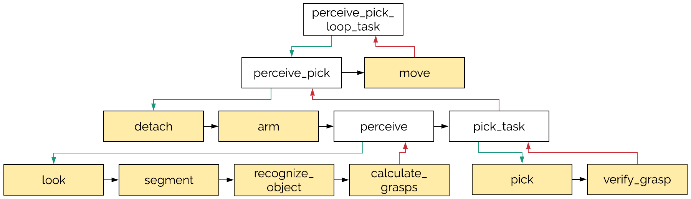

The web interface has 5 sections:
Note: If a request for help appears shortly after you have already completed one (within seconds), please refresh the page.
The slides show how the UI might change over the course of the study.
The robot is experiencing poor WiFi signal.
An E-Stop (hardware or software) has been triggered; the robot will not move its actuators. During this time, RViz will not reflect the true pose of the robot accurately.
The base is mislocalized in the map: the robot thinks it is somewhere it is not.
The robot base cannot move because its caster wheels are misaligned with the direction of travel and the current motor commands are not enough to realign them on the carpet; some other base motor commands might be needed.
Arm motion planning did not succeed either during planning or during execution. Common causes include obstacles in the planning scene, unexpected contacts, rapid planning scene updates, etc.
A perception failure where either a) the desired object is in view and it was misclassified (possibly due to clutter or noise), or b) the desired object is not in view, but another (wrong) object was misidentified as the desired object.
The desired object is not in the robot's current view.
A transient perception error, such as a momentarily delayed or malformed point cloud.
A failure in grasp calculation where either a) no grasps were calculated, or b) the calculated grasps were bad, e.g.: too far away, unreachable, in collision with the environment, etc.
A failure where either a) there is nothing in the gripper, or b) the current object in the gripper is grasped incorrectly.
All attempts at inserting the gear into the SCHUNK chuck failed.
The large gear cannot be retrieved from the SCHUNK chuck: it is either inaccessible or it fell from the chuck.
The object that was in the gripper fell out; most likely caused by a poor grasp on the object.
The failure, or its cause, are unknown. Please be frugal in choosing this option.
Fault monitors are background monitors that periodically check the status of robot components:
Beliefs are boolean predicates that capture the robot's knowledge of the task, the environment, or itself:
The action is available in the RViz interface as 2D Pose Estimate. Usage:
Remember that this does not actually move the robot; it only updates where the robot thinks it is in the map.
Attempt a software reset by releasing the software E-Stop. Note that the actuators will reset---the gripper will open and gravity compensation on the arm might cause the arm to drift (based on the arm's pose and payload at startup).
Move the head around to survey the environment around the robot with the RGBD camera.
Make a short left, right, back movement with the base.
Navigate to the origin in the map. Remember that there is no collision checking performed during navigation.
Navigate back towards the origin. Then navigate to a pose 0.5m to the left or right of the starting pose. Remember that there is no collision checking performed during navigation.
Open the gripper. Any object currently in the gripper will fall out. Also note that the PlanningScene is not updated when this action is used.
If the gripper is closed, then check to see if there is something in the gripper and return a boolean value indicating if something is grasped or not.
There is no guarantee on the returned data if the gripper is open.
Clear the PlanningScene used for arm motion planning, and reinitialize it from the saved StaticOctomap. Note that while this action may clear obstacles that are not already in the octomap, collision objects added programmatically to the PlanningScene will not be affected.
Use motion planning to move the arm to the pose shown in the image.
Segment individual object point clouds from a table-top. Note that a table-top must be in the robot's current point cloud. The action returns the number of individual object segments that are found on the table-top. If the number of segments is 0, the action returns an ABORTED status.
Assuming a previous execution of segment (above), run classification on each of the segmented object point clouds. If successful, return a dictionary mapping the segmented object id (visible in RViz) to the object's class or the class NONE
Navigate to the dropoff location and place the object that is currently in the gripper over there. The robot ends up at dropoff with the arm in the ready position (see above).
Navigate to the bolts bin at screw_bin and replay a pre-recorded arm motion to stir the bolts. The robot ends up at screw_bin with the arm in the ready position (see above).
Do NOT execute another action while this action is executing.
Tasks are specified as a hierarchy of subtasks and primitive actions that are executed in sequence. An example (primitive actions are coloured in yellow):
Consider a failure in the arm action (press the buttons):
On a failure, we show:
For each of the active levels in the hierarchy, we show:
Note: the information in the hierarchy displays what the robot should execute, and not necessarily what it actually executed.
When you are ready to resume from a failure, the buttons in the UI allow you to specify where in this hierarchy to resume. Since you might not be familiar with the full task hierarchy, check with me before clicking on a button to resume.